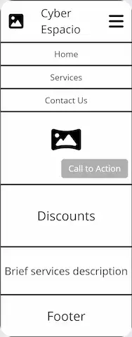
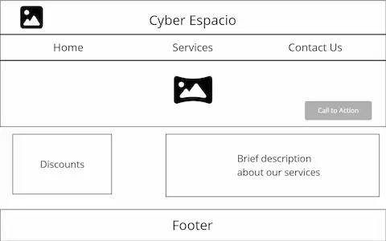

Site Name: Cyber Espacio
This is a local cyber cafe name from San Jose Villanueva, which provides technology services like PC access, printing and copy making, and a little store that sells technology items.
Site Purpose:
This website will provide important information about all the services the business offers, their prices, discounts and an estimated total budget for the services the customer plans to use.
Scenarios:
Scenario 1: How much will I spend if I need to use a computer for X amount of time?
Scenario 2: What type of services are offered besides access to a computer?
Scenario 3: Where can I find the contact information to visit the cyber?
Color Scheme
Primary Color: #45154d Primary color will be used for header and footer background, and as well as buttons
Secondary Color: #FDE85E Secondary color will be used for navigation menu and also for font color in dark backgrounds
Accent 1 Color: #060049 Accent 1 color will be used for headings background and for text color in light backgrounds
Accent 2 Color: #EEABFF Accent 2 color will be used for sections background and also in effects for animations on buttons
Typography
Header Font: Bevan
Text Font: Metrophobic
Wireframes

